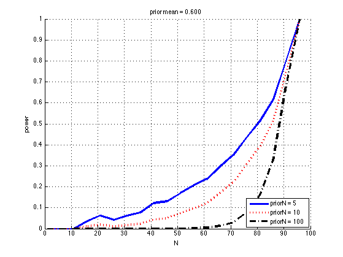
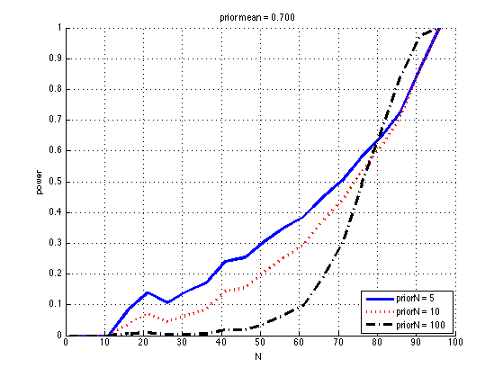
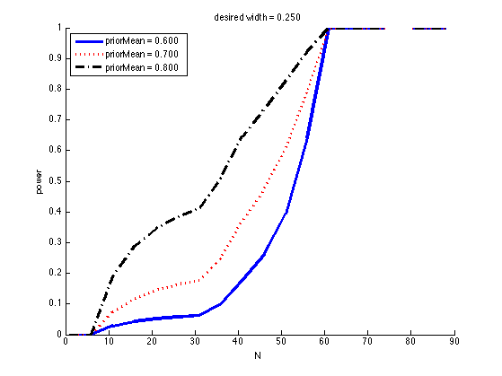
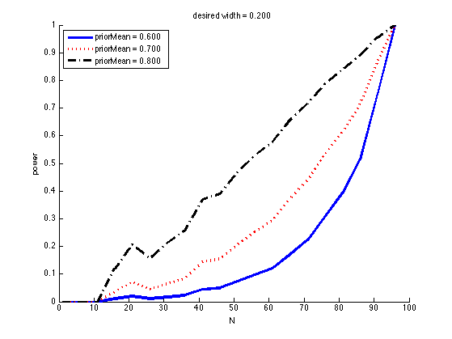
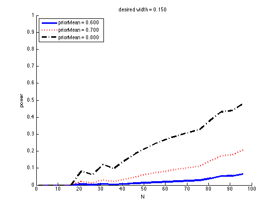
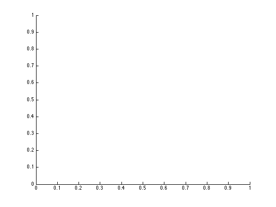

Contents
Power vs sample size for excluding a null value from binary trials
function powerCurvesDemo()
Ns=1:5:100; nullValue = []; maxWidth = 0.2; priorMeans = [0.6 0.7 0.8]; priorNs = [5 10 100]; [styles, colors, symbols, str] = plotColors(); for i=1:numel(priorMeans) figure; hold on for j=1:numel(priorNs) priorMean = priorMeans(i); priorN = priorNs(j); power = powerCurves(priorMean, priorN, nullValue, maxWidth, Ns); plot(Ns, power, sprintf('%s%s', styles{j}, colors(j)), 'linewidth', 3); legendStr{j}= sprintf('priorN = %d', priorN); end legend(legendStr ,'location', 'southeast'); xlabel('N'); ylabel('power') title(sprintf('prior mean = %5.3f', priorMean)) set(gca,'ylim',[0 1]);grid on drawnow end 

Ns=1:5:100; nullValue = []; priorMeans = [0.6 0.7 0.8]; priorN = 10; widths = [0.25 0.2 0.15]; [styles, colors, symbols, str] = plotColors(); for i=1:numel(widths) maxWidth = widths(i); figure; hold on for j=1:numel(priorMeans) priorMean = priorMeans(j); power = powerCurves(priorMean, priorN, nullValue, maxWidth, Ns); plot(Ns, power, sprintf('%s%s', styles{j}, colors(j)), 'linewidth', 3); legendStr{j}= sprintf('priorMean = %5.3f', priorMean); end legend(legendStr ,'location', 'northwest'); xlabel('N'); ylabel('power') title(sprintf('desired width = %5.3f', maxWidth)) set(gca,'ylim',[0 1]);grid off drawnow printPmtkFigure(sprintf('powerCurvesDemo2-width%d', i)); end  
end
 Power vs sample size for excluding a null value from binary trials
Based on p337 of "Doing Bayesian Data Analysis" Kruschke 2010
function power = powerCurves(priorMean, priorN, nullValue, maxWidth, Ns) if nargin < 3, nullValue = []; end if nargin < 4, maxWidth = []; end if nargin < 5, Ns = 1:5:100; end prior.a = priorMean*priorN; prior.b = (1-priorMean)*priorN; uniformPrior.a = 1; uniformPrior.b = 1; for Ni=1:numel(Ns) N = Ns(Ni); xs = 0:N; for i=1:numel(xs) x = xs(i); px(i) = exp(nchoosekln(N,x) + betaln(x+prior.a, N-x+prior.b) ... - betaln(prior.a, prior.b)); postA = uniformPrior.a + x; postB = uniformPrior.b + N-x; icdf = @(p) betainv(p, postA, postB); H = hdiFromIcdf(icdf); if ~isempty(nullValue) goal(i) = (H(1) > nullValue) || (H(2) < nullValue); end if ~isempty(maxWidth) goal(i) = H(2)-H(1) <= maxWidth; end end power(Ni) = sum(px .* goal); end end